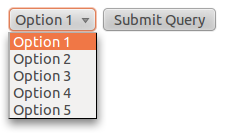
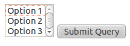
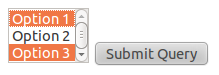

<select> 可以用來做出 drop-down list 跟 list box 的效果：
<select name="select">  <option value="opt1">Option 1</option>
<option value="opt1">Option 1</option>  <option value="opt2">Option 2</option>
<option value="opt3">Option 3</option>
<option value="opt4">Option 4</option>
<option value="opt5">Option 5</option>
</select>
<option value="opt2">Option 2</option>
<option value="opt3">Option 3</option>
<option value="opt4">Option 4</option>
<option value="opt5">Option 5</option>
</select>
<select> 預設會以 "下拉單選"（drop-down list）的形式來表現。

| |
選項用個別的 <option> 來表示，其中文字內容（Option 1）是使用者會看到的項目名稱（label），實際送出的值則是 value 的內容（opt1）。
|
<select name="select" size="3">
<option value="opt1">Option 1</option>
<option value="opt2">Option 2</option>
<option value="opt3">Option 3</option>
<option value="opt4">Option 4</option>
<option value="opt5">Option 5</option>
</select>
size 用來控制一次可以看到的選項數。加上 size 後還是維持單選，但表現方式變成可捲動的清單。

|
<select name="select" multiple>
<option value="opt1" selected>Option 1</option>
<option value="opt2">Option 2</option>
<option value="opt3" selected>Option 3</option>
<option value="opt4">Option 4</option>
<option value="opt5">Option 5</option>
</select>
multiple 可以將清單由單選變成多選，預設會以捲動的清單來表現。

| |
可以預選多個項目，只要在不同 <option> 加上 selected 即可。
|